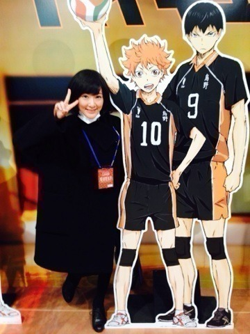
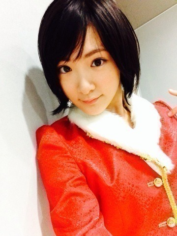
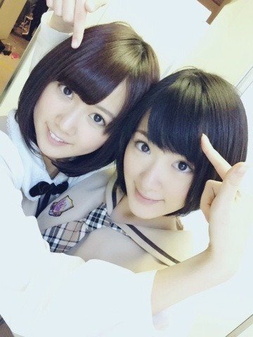

メリクリ〜ヽ(・∀・)ﾉ
今日はイヴですが！
私は今洗濯しています！
何処かへ行こうかと思ったけれど、20日から毎日ステージに立たせて頂いたり充実してたのでおうちにいます！
今日起きたらお昼過ぎてたよ。
うん！もう夕方！
はーっはっはっはー！ヽ(・∀・)ﾉ
サンタさーん！
プレゼントちょうだい！(´；Д；｀)
21日はジャンプフェスタ出ました！
岸本先生に会いました！
もう。
感激しました！
握手してもらいましたが、握手した時感動して泣きました。
イベントで岸本先生がNARUTOは開いた巻物を閉じる作業に入ってるというお話をしていて。
マジか！
と思ったのですが、私は一生NARUTOが大好きです。
マダラ強すぎるよ〜！
少し会場をまわりました！
大興奮♡

ハイキュー！
アニメ楽しみ！
岸本斉史先生、平健史先生
竹内順子さん、杉山紀彰さん、
井上和彦さん、中村千絵さん
本当にありがとうございました！
あぁ。
にやにやしてほっぺ痛かったよ！♡
22日はFamilyMart Presents MUSIC FOR ALL, ALL FOR ONE 2013でした！
クリスマス直前なので、武道館の時に着たサンタさんになりました！

全身撮ればよかった〜(★´-ω-)
HYDEさんが乃木坂のステージ見てて下さったんです！
きゃ〜ヽ(・∀・)ﾉ
代々木は全国ツアー振り！
ちょっと頭の隅にあの時の景色を思い浮かべながらやりました。
乃木坂ふぁむのサイリウムが安心しました。
ありがとう。
乃木坂はじめましての方もいらっしゃったと思いますが、乃木坂どうでしたか？
そして！
昨日は名古屋で全国握手会がありました！

髪型おそろっち〜♡
らりん、声抑えるとか言ってたけどかなり元気だったよっ！
最近生駒ちゃんかっこいいって言われます。
ライブ見てほれましたって♡
もっとスキル上げるようと思いました。
また会いましょうねっヽ(・∀・)ﾉ
へばなっ！☆